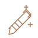
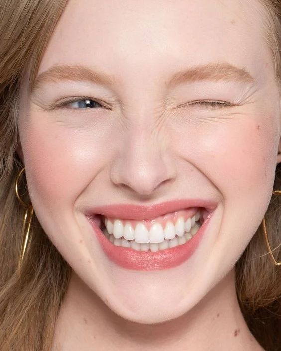
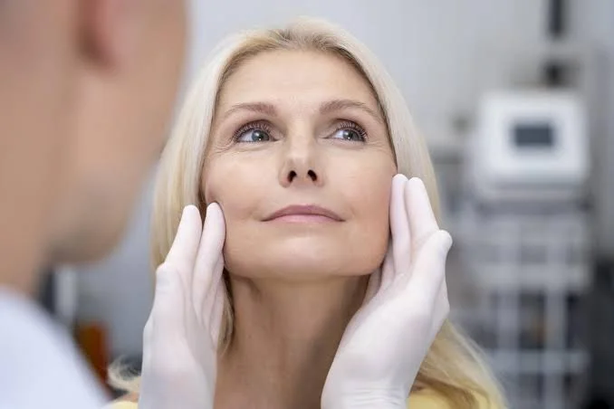
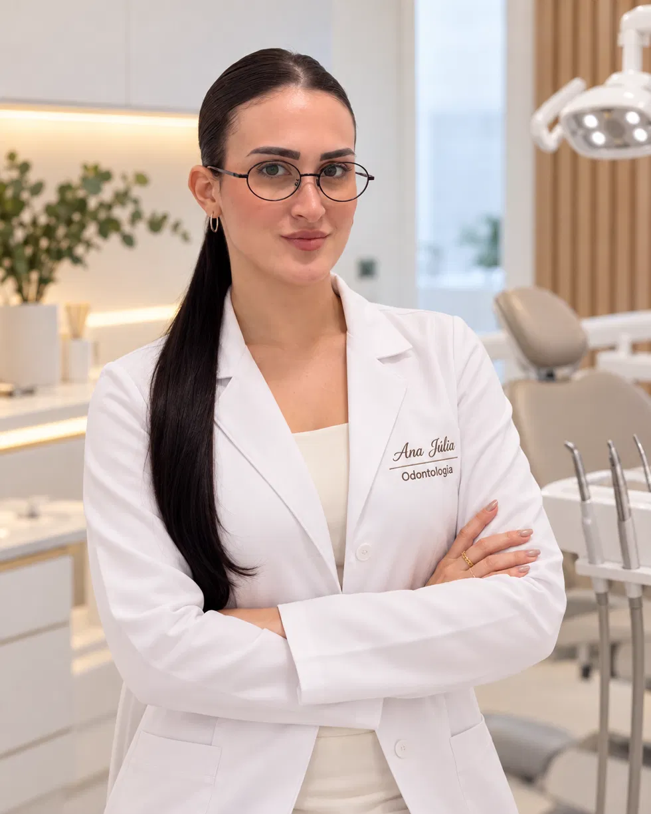
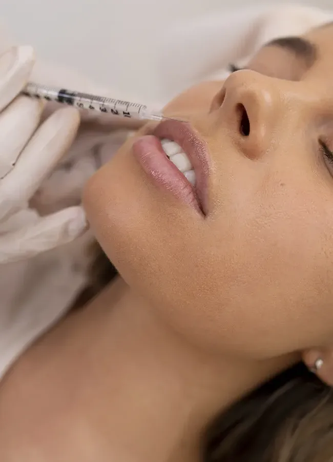
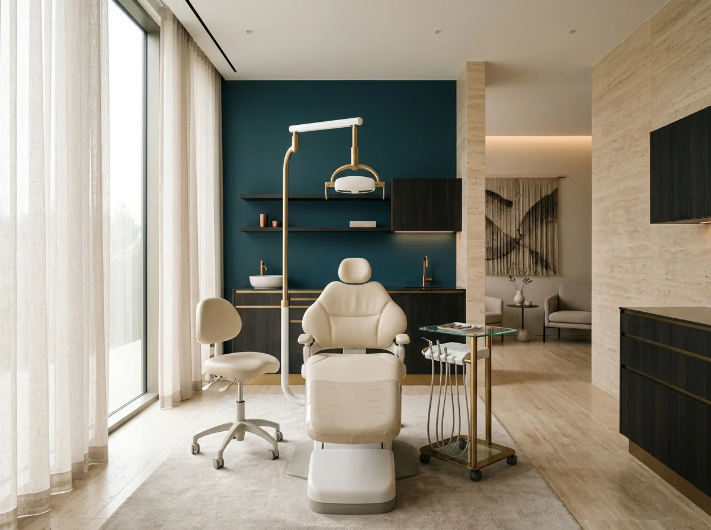
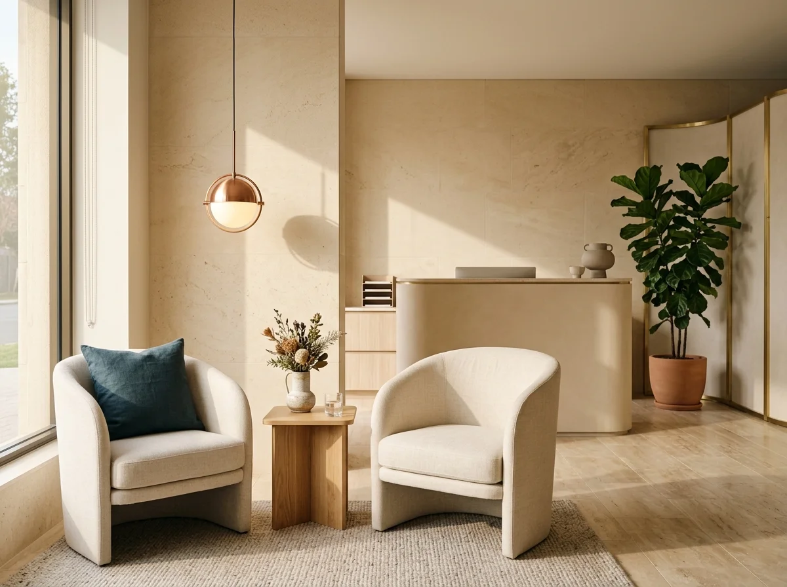
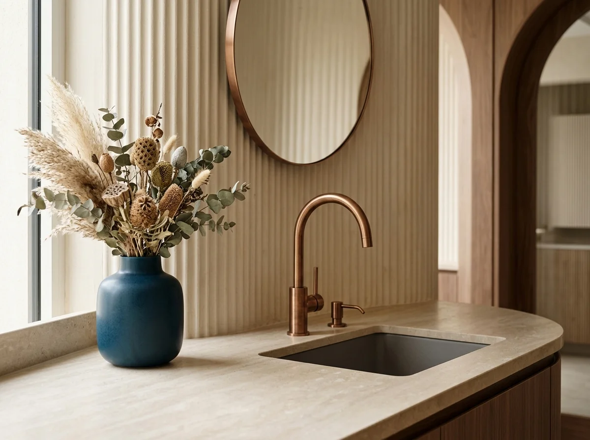
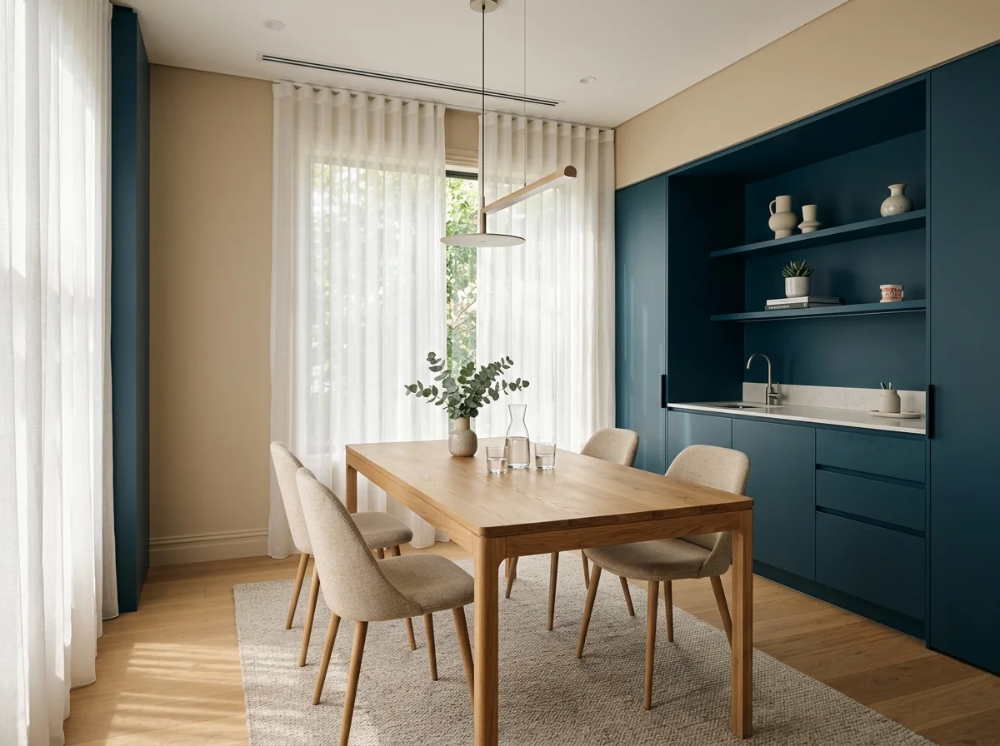
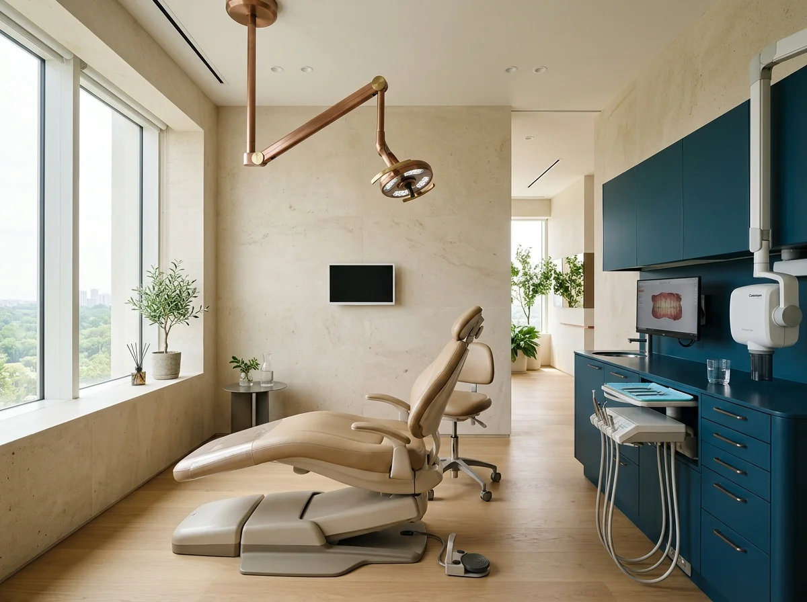

Toxina Botulínica
Aplicação precisa para suavizar linhas de expressão e tratar disfunções como bruxismo e sorriso gengival, respeitando a dinâmica muscular natural.
Harmonização Orofacial & Estética do Sorriso
Atendimento humanizado, planejamento individualizado e técnicas atuais para valorizar sua expressão. Segurança, ética e naturalidade em cada detalhe.
Agendar pelo WhatsAppDra. Ana Júlia Bonazza · Cirurgiã-Dentista · Especialista em Harmonização Orofacial


Cuidado que escuta
Conheça a profissional
Cirurgiã-dentista formada em Odontologia, com atuação clínica. Especialista em Harmonização Orofacial, atua também com odontologia estética e se dedica a tratamentos que equilibram função, saúde e estética com critério técnico.
A prática baseia-se em evidência científica, atualização constante e escuta atenta. Cada rosto conta uma história; o planejamento respeita proporções, anatomia e as expectativas conversadas com cada paciente.
O consultório foi pensado para acolher: ambiente tranquilo, tecnologia de apoio e tempo dedicado a explicar cada etapa. A relação entre profissional e paciente é construída na transparência, no consentimento informado e no acompanhamento contínuo.
Dra. Ana Júlia Bonazza · Cirurgiã-Dentista · Especialista em Harmonização Orofacial

Abordagens personalizadas
Cada indicação parte de uma avaliação clínica individual e de conversa transparente sobre possibilidades e cuidados.

Aplicação precisa para suavizar linhas de expressão e tratar disfunções como bruxismo e sorriso gengival, respeitando a dinâmica muscular natural.
Restauração de volume, definição de contorno e hidratação profunda com ácido hialurônico, buscando harmonia com o restante da face.
Indicados após avaliação individual para estimular a produção de colágeno e apoiar a firmeza da pele.
Reposicionamento tecidual minimamente invasivo para efeito lifting suave e estímulo de colágeno nas áreas tratadas.
Técnica de hidratação injetável indicada conforme avaliação, voltada à textura e ao viço da pele.
Análise detalhada de proporções, assimetrias, envelhecimento e necessidades funcionais para um planejamento personalizado.
Protocolo supervisionado para clareamento dental, com acompanhamento da sensibilidade e planejamento individual. O resultado varia de paciente para paciente.
Facetas ultrafinas de cerâmica para correção de cor, forma e pequenos desalinhamentos, com preparo minimamente invasivo.

Ambiente de cuidado
Um ambiente pensado para receber você com tranquilidade e atenção em cada detalhe.





Informação antes de decidir
Conjunto de procedimentos odontológicos que visam equilibrar estética e função da face, incluindo toxina botulínica, preenchedores, bioestimuladores, fios e tratamentos dentários associados.
Pacientes maiores de 18 anos, após avaliação clínica completa, anamnese detalhada e consentimento informado. Contraindicações são avaliadas individualmente.
A maioria dos procedimentos utiliza anestesia tópica ou local; o desconforto costuma ser leve e bem tolerado. A sensibilidade varia de pessoa para pessoa.
A durabilidade varia por paciente, conforme metabolismo, estilo de vida, área tratada e produto utilizado. Não há garantia de tempo fixo.
Orientações personalizadas são dadas no dia: evitar exposição solar intensa, atividade física vigorosa nas primeiras 24–48h, não massagear a área e seguir a prescrição do profissional.
Pelo botão “Agendar pelo WhatsApp” nesta página ou pelo telefone (65) 99658-9250.
A consulta inclui avaliação facial e planejamento individualizado. As informações necessárias são apresentadas no momento do agendamento, sem compromisso de realizar tratamentos após a avaliação.
Vamos conversar
Entre em contato para conhecer as possibilidades de cuidado de acordo com o seu momento.
Falar pelo WhatsAppO mapa é fornecido pelo Google e pode utilizar cookies de terceiros.